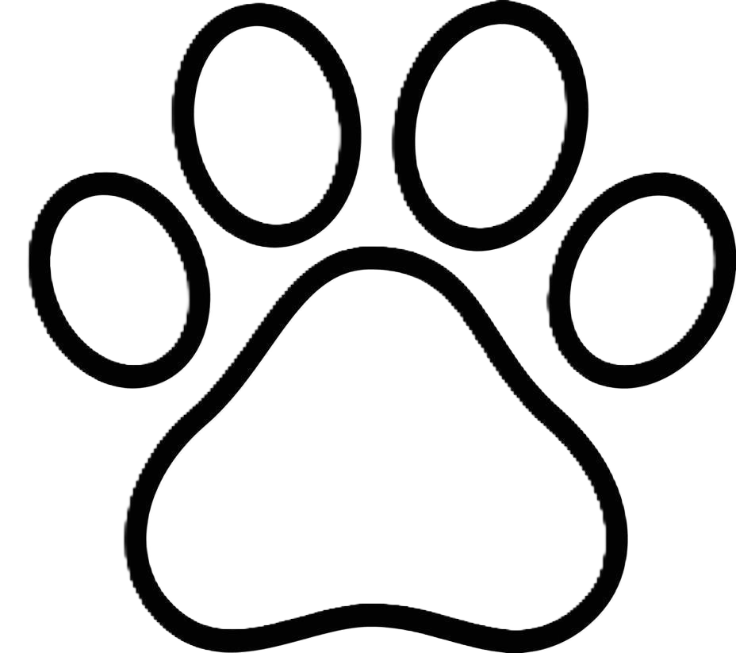

Mistä kaikki lähti liikkeelle?
Unelmamme on aina ollut perustaa kahvila, jossa koirat ja niiden ystävät voisivat nauttia toistensa seurasta herkullisten leivonnaisten ja juomien äärellä. Yksi tärkeimmistä arvoistamme alusta alkaen oli myös halu auttaa rescue-koiria, ja tämä ajatus onkin ollut keskeinen osa suunnitelmaamme.
Suunnittelu lähti käyntiin vauhdilla, ja pian olimme jo valitsemassa väripalettia. Mikä olisikaan sopivampi väri koirakahvilaan kuin vaaleanpunainen? Halusimme luoda kahvilan, jossa pinkin sävyt ja suloiset koirat sulattavat jokaisen asiakkaan sydämen.
Rakennusvaiheessa edettiin ripeästi, ja pian kahvilamme oli valmis, hurmaava ja täynnä iloa. Nimeksi annettiin Bark & Brew Cafe. Kahvila on suunniteltu paitsi ihmisten, myös karvakuonojen viihtyisäksi paikaksi. Koirille on omia herkkupaloja (tiettyjen rajojen mukaan!), vesipiste ja pieni leikkialue, jotta niiden olisi mukavaa ja turvallista olla kahvilassa.
Olemme sitoutuneet tukemaan rescue-koirien auttamista, ja lahjoitamme kuukausittain osan myyntivoitoistamme eri järjestöille, jotka ovat lueteltu alla. Tämä on meille sydämen asia, ja haluamme tarjota asiakkaillemme mahdollisuuden nauttia paitsi hyvästä seurasta ja herkullisista tarjottavista, myös mahdollisuuden osallistua tärkeään työhön koirien hyväksi.
Koirien esittely
Meiltä löytyy yhteensä kahdeksan ihanaa koiraa,
joita voit tulla katsomaan ja silittämään kahvilaamme!
Kaikki koirat ovat yställisiä ja varmasti sulattavat sydämesi.
Koiria on kerrallaan paikalla aina puolet kaikista koiristamme.